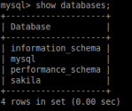
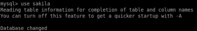
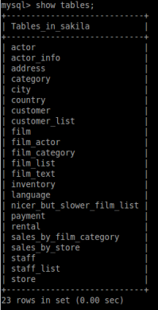
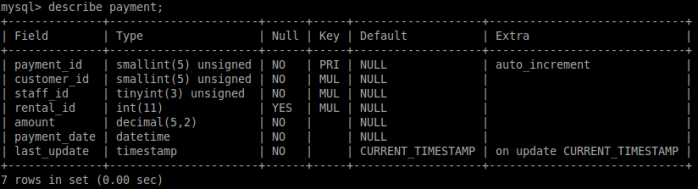

Basic Usage
• Remember to terminate the line with a semicolon ( ; )
• the database name is case sensitive, so we cannot do 'USE SAKILA;' instead of 'USE sakila;'
• SQL statements aren't case sensitive, which means 'USE sakila;' and 'use sakila;' refer to the same command.
◇ a good practice is specify statements in uppercase to avoid confusion.
Basic Usage
  mysql> describe <table>; #to show the structure of a table
Describe <table>; is basically a shortcut for “show columns from <table>;”
 ▪ Fields → these are the columns of the table
▪ Type → data type and between brackets the maximum size for the type
▪ Null → shows whether a field is allowed to contain a null value (the absence of anything) or not.
▪ Key → if a column have a designated key
- PRI → is short for primary, must be unique for each record in the table, and it is often set to increment automatically
- UNI → values in a column must be unique.
- MUL → multiple occurrences of the same value are allowed within the column
▪ Default → default value for new records
•
SELECT statement: The SELECT statement is used to select data from a database. The data returned is stored in a result table, called the result-set.
mysql> SELECT <column1, column2,...> FROM <table_name> WHERE <condition>;
◇
UNION operator:
mysql> SELECT column_name(s) FROM table1 UNION SELECT column_name(s) FROM table2;
•
Comments
there are two ways to comment a line:
# → hash symbol
-- → two dashes followed by a space
mysql> SELECT city FROM world; # this is a comment
mysql> SELECT apple FROM fruits; -- this is another comment
Bibliography and to know more:
https://www.w3schools.com/sql/default.asp